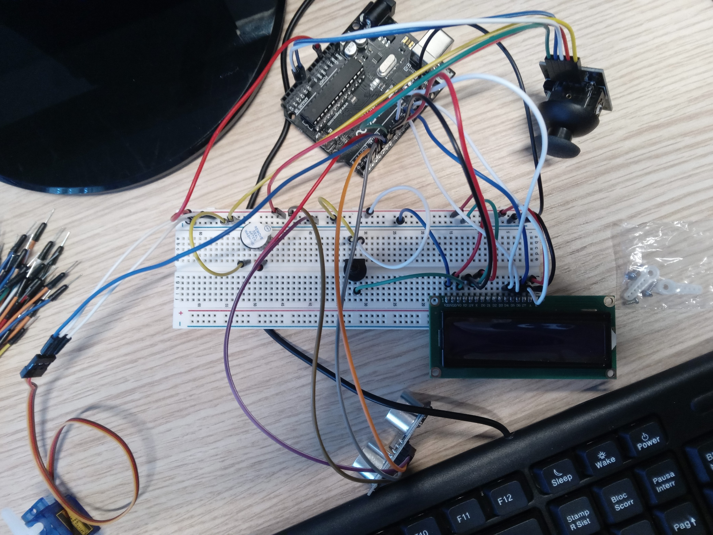
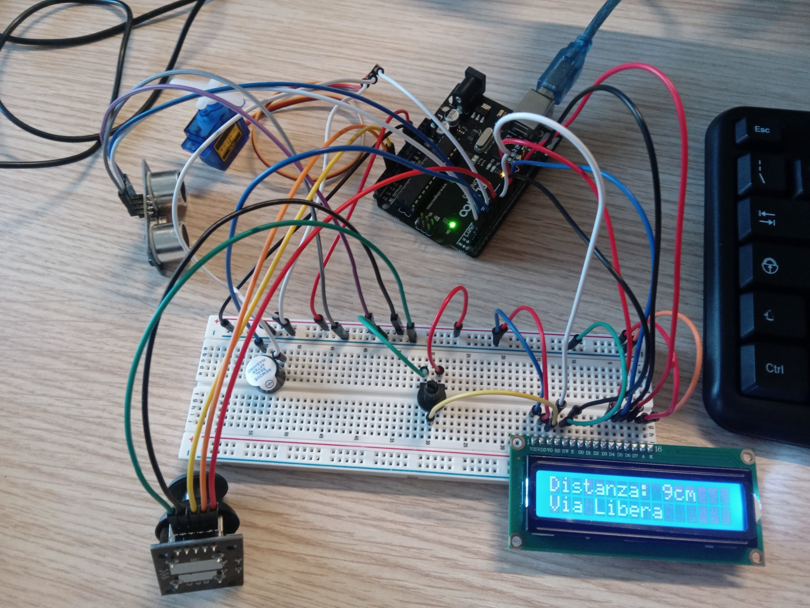
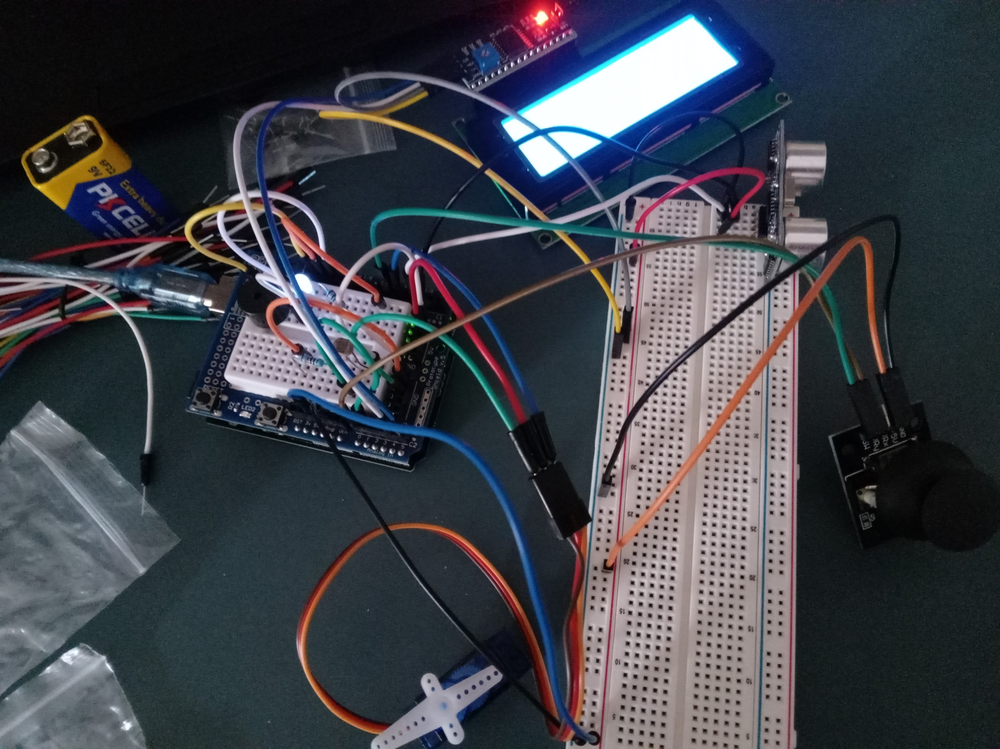

Per realizzare il progetto, abbiamo prima di tutto utilizzato singolarmente ogni componente del ardunio che ci serviva per testarlo.
In seguito abbiamo implementato ogni componente che avremmo dovuto utilizzare con il codice.
Come prima cosa abbiamo testato singolarmente i vari componenti per testare il loro corretto funzionamento.
Poi abbiamo collegato il joystick alla breadboard, in modo che potesse controllare il servo motore e scegliere la modalità (manuale o automatica).

Dopo abbiamo collegato il sensore per la distanza all'arduino, fissandolo al servo motore in modo che rotasse di 180°.
Lo schermo LCD lo abbiamo collegato in modo che mandasse a schermo se un oggetto è stato rilevato e la sua distanza dal sensore.

Abbiamo collegato anche un buzzer che quando l'oggetto è entro i 10 CM suona.
Successivamente, abbiamo collegato un fotoresistore che quando rileva una debole luce accende un led bianco.

Dunque, per montare la struttura, con l'aiuto del prof. Pradella, abbiamo stampato in 3D un supporto per il sensore ad ultrasuoni da montare sul servo Motore
Infine abbiamo costruito una struttura in cartone, in modo da tener in ordine e controllata tutti i componenti e per prentarlo al esposizione.